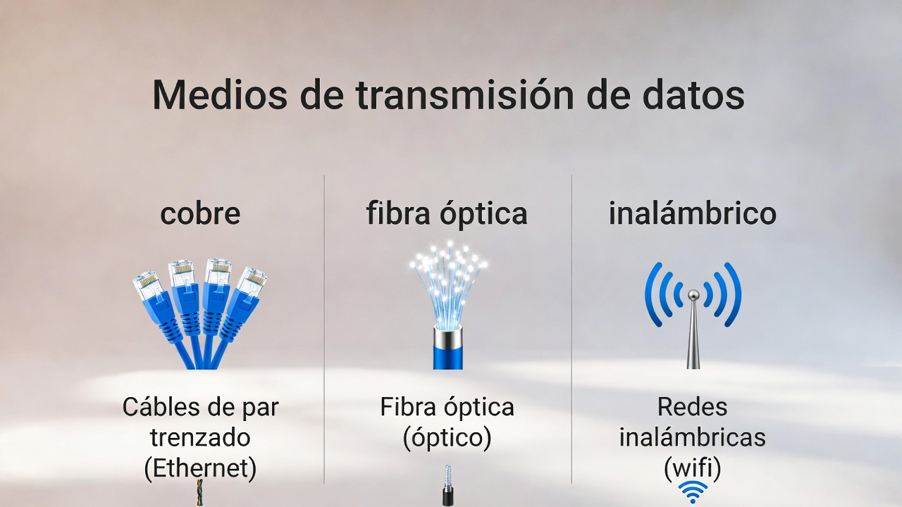
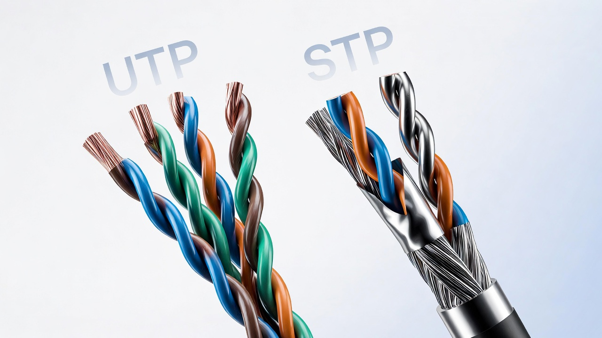
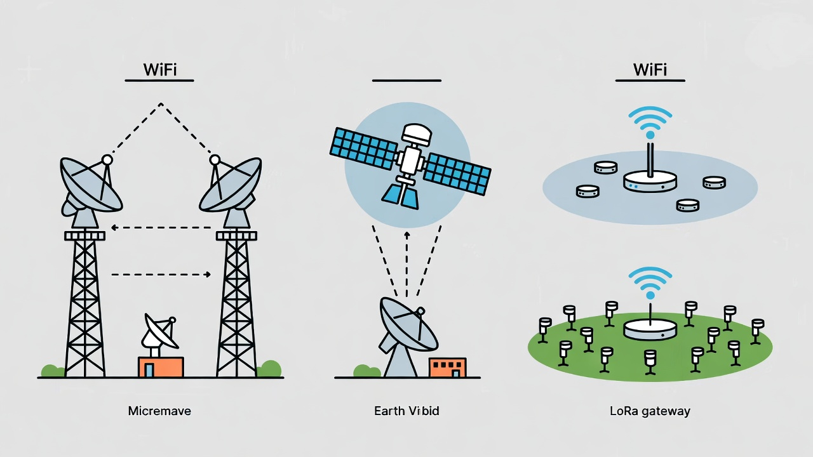

Medios de Transmisión
Que puedas elegir, instalar y diagnosticar un medio de transmisión (cobre, fibra, inalámbrico) como si estuvieras en terreno.
- Panorama general de medios (cobre · fibra · wireless)
- Cobre: UTP/STP, cableado horizontal y vertical
- Estándares EIA/TIA 568 A/B, cables derecho y cruzado
- Fibra óptica: monomodo, multimodo, distancias y conectores
- Enlaces inalámbricos: WiFi, microondas, HF
- Taller: creación de cables RJ‑45 + certificación básica
Navegación: flechas · Espacio · S notas del presentador.
Los tres grandes tipos de medios
Clasificación general
- Guiados metálicos: par trenzado y cable coaxial.
- Guiados no metálicos: fibra óptica (mono / multimodo).
- No guiados: radio, microondas, satelital, infrarrojo, LoRa.
Pregunta rápida: ¿tu conexión de casa usa cobre, fibra o aire… o una mezcla?

UTP vs STP · Interior vs exterior
UTP (Unshielded Twisted Pair)
- Pares trenzados sin blindaje adicional → económico y fácil de instalar.
- Muy usado en cableado horizontal (oficinas, laboratorios).
- Distancia típica: hasta 100 m por segmento (dependiendo de la categoría).

Cableado estructurado: horizontal y vertical
Horizontal
- Desde el patch panel del rack hasta la toma de usuario.
- Cable normalmente UTP/FTP, escondido en ductos, bandejas o pisos técnicos.
- Longitud máxima práctica: 90 m de cable permanente + 10 m de patch cords.
Vertical (backbone)
- Une salas de comunicaciones entre pisos o edificios (racks principales).
- Puede ser cobre de alta categoría o fibra óptica según distancia y capacidad.
- Importante considerar mensajeros, bandejas y rutas ignífugas.
Buen diseño = menos improvisación con “parches” en terreno y menos sorpresas en certificación.
Patch panel, patch cord, user cord
- Patch panel: donde terminan los cables horizontales; frontales RJ45, trasera con punch‑down (110 o similar).
- Patch cord: cable corto desde patch panel al switch en el rack.
- User cord: cable que va desde la roseta de pared al equipo del usuario.
Buenas prácticas
- Etiquetar ambos extremos (rack y toma).
- Mantener curvas suaves; evitar aplastar cables en puertas o bandejas.
- No mezclar categorías (Cat5e vs Cat6) en el mismo recorrido crítico.
EIA/TIA 568 A y B · Cables derecho y cruzado
Código de colores
4 pares de cobre → 8 conductores. Los estándares definen el orden de esos colores en el conector RJ‑45.
- 568A: verde en el par “principal”.
- 568B: naranja en el par “principal”.
En un edificio típico se estandariza uno (A o B) y se mantiene siempre igual en toda la instalación permanente.
Derecho vs cruzado
- Cable derecho: mismo estándar en ambos extremos (A–A o B–B).
- Cable cruzado: un extremo A, el otro B (intercambio TX/RX).
- Auto‑MDI/MDIX: los switches modernos detectan y corrigen, por eso ya casi no fabricamos cables cruzados manualmente.
Núcleo, índice de refracción y tipos de fibra
Estructura básica
- Núcleo: vidrio de alto índice de refracción donde viaja la luz.
- Revestimiento: vidrio de menor índice → reflexión interna total.
- Recubrimiento, refuerzo y cubierta → protegen mecánicamente la fibra.
Monomodo vs multimodo
- Monomodo: largas distancias y altas velocidades (backbone, ISP).
- Multimodo: económica para distancias cortas en edificios y campus.

Pig tails, cabeceras, racks y multiplexación
Palabras clave para certificación: pérdidas por inserción, retorno, presupuesto de potencia.
HF, microondas, satelital, WiFi y LoRa
HF, microondas y satelital
- HF y microondas: enlaces punto a punto de larga distancia (cerros, torres).
- Requieren línea de vista y cuidado con el volumen de Fresnel y obstáculos.
- Satelital: cobertura global donde no llega fibra, a costa de mayor latencia.
WiFi y LoRa
- WiFi (2.4 / 5 / 6 GHz): acceso local de alta velocidad para usuarios.
- LoRa / LoRaWAN: baja velocidad pero gran alcance y muy bajo consumo, ideal para sensores IoT distribuidos.

Certificar un punto de red
Qué verifica el certificador
- Continuidad y orden correcto de pares.
- Longitud del enlace y atenuación.
- Crosstalk, NEXT, retornos y parámetros según la categoría.
Por qué importa
- Permite garantizar velocidad (ej. que una toma soporte 1 Gbps).
- Es el respaldo frente a proveedores e instaladores.
- Ahorra horas de troubleshooting: “el enlace está certificado o no”.
Armado de cables RJ‑45
- Preparar el cable: retirar camisa externa con la crimpadora, sin dañar pares.
- Ordenar colores según 568A o 568B (según estándar definido).
- Alinear y cortar todos los conductores al mismo largo.
- Insertar en el conector RJ‑45 verificando que lleguen hasta el fondo y que la camisa entre ligeramente.
- Crimpar con la herramienta y repetir en el otro extremo.
- Probar con tester de cable o certificador.
Mostrar en vivo: crimpadora, conectores, cable UTP y tester. Ideal que cada equipo arme al menos un cable funcional.
¿Qué medio elegirías?
- Distancia máxima del enlace.
- Ancho de banda requerido hoy y a 5 años.
- Ambiente: ruido eléctrico, intemperie, ductos.
- Presupuesto: CAPEX vs OPEX (mantención).
- Normativa y certificación que se exigirá.
Usa este checklist para cualquier diseño o caso práctico del curso.
Quiz de medios de transmisión
Cómo usar este quiz
- Los estudiantes responden levantando mano o en voz alta.
- Luego haces clic en la alternativa elegida para marcarla.
- Si es correcta se pintará en verde; si es incorrecta, en rojo y se indicará la correcta.
Tip
Puedes volver a usar este quiz al final de la unidad o como repaso rápido antes de una evaluación formal.
Resumen 3‑2‑1 de medios
3 ideas clave
- Cobre, fibra e inalámbrico tienen ventajas y límites claros (distancia, velocidad, ambiente).
- EIA/TIA 568 y la certificación te dan un lenguaje profesional con instaladores y proveedores.
- Saber armar y probar un cable RJ‑45 es habilidad básica de terreno.
2 preguntas · 1 desafío
- ¿Qué medio usarías para tu casa, tu facultad y un ISP?
- ¿Qué parámetros revisarías primero ante un problema de “no navega”?